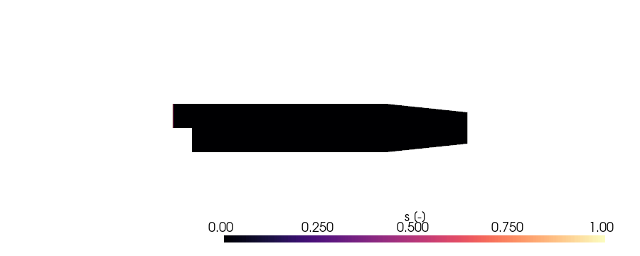

Note
Go to the end to download the full example code.
Add a passive scalar transport model¶
Extend incompressibleFluid with a new physics model — without
modifying the solver itself. The model adds a passive scalar s
(dye, tracer, smoke marker) advected by the existing velocity field
and diffusing with a configurable coefficient:
You should be comfortable with type hints and decorators. If you haven’t run a NeoFOAM case yet, do Run your first NeoFOAM case first.
Plugin imports¶
import contextlib
import subprocess
from pathlib import Path
from typing import Any
import pybFoam as pyf
import pyvista as pv
from pybFoam import (
fvm,
fvScalarMatrix,
surfaceScalarField,
volScalarField,
)
from neofoam import FieldUpdates, Model, field
# from neofoam.foam import fvSchemes, fvSolution
from neofoam.io import BaseConfig
from neofoam.solver.incompressibleFluid import run as run_incompressible
from neofoam.solver.incompressibleFluid.models import incompressibleFluidModel
from neofoam.tutorial import clone_case
Scaffold the plugin¶
register_with adds the empty spec to incompressibleFluid’s
plugin registry. The four decorators below populate it.
class PassiveScalarConfig(BaseConfig):
D: float = 0.0 # diffusivity, m²/s
passive_scalar = Model("passive_scalar").register_with(incompressibleFluidModel)
Activate when constant/scalarProperties is present¶
Without that file the framework skips the model entirely — no config load, no operations, no overhead.
# Framework note: in the current branch ``@spec.detect`` takes no
# arguments (the old ``case_dir`` parameter was removed) and ``load``
# now receives ``(case_dir, instance_id)`` instead of ``(case_dir,
# entry)``. Detection happens with the case as the cwd, so a relative
# path probes the right file.
@passive_scalar.detect
def detect() -> bool:
return Path("constant/scalarProperties").exists()
Load the diffusivity from the case¶
@passive_scalar.load
def load(_case_dir: Path, _instance_id: str) -> PassiveScalarConfig:
props = pyf.dictionary.read("constant/scalarProperties")
return PassiveScalarConfig(D=props.get[float]("D"))
Register the new field¶
The framework topologically sorts every model’s contributions plus
the solver’s own. cfg is auto-injected by type — the
framework finds the PassiveScalarConfig on runtime.config.
@passive_scalar.build
def build(cfg: PassiveScalarConfig) -> list[Any]:
def create_s(context: dict[str, Any]) -> volScalarField:
return volScalarField.read_field(context["mesh"], "s")
return [field("s", create_s, depends_on=["mesh"])]
Add the transport operation¶
depends_on=["continuity"] anchors after the pressure-velocity
algorithm produces a divergence-free phi — solving with the
corrected flux is what keeps the scalar conservative.
@fvSchemes.add / @fvSolution.add declare requirements the
framework’s verifier checks at startup.
@passive_scalar.operation(depends_on=["continuity"])
# @fvSchemes.add(
# ddt="ddt(s)",
# div="div(phi,s)",
# laplacian="laplacian(D,s)",
# )
# @fvSolution.add("s")
def solve_s(
self: Any,
s: volScalarField,
phi: surfaceScalarField,
) -> FieldUpdates:
cfg: PassiveScalarConfig = self.config
D = pyf.dimensionedScalar("D", pyf.dimViscosity, cfg.D)
sEqn = fvScalarMatrix(fvm.ddt(s) + fvm.div(phi, s) - fvm.laplacian(D, s))
sEqn.solve()
return FieldUpdates({"s": s})
Run incompressibleFluid on the bundled case¶
tutorials/passive_scalar_pitzDaily is pitzDaily plus
constant/scalarProperties, 0.orig/s, and matching s
entries in the schemes/solution files. The bundled case sets the
inlet BC to fixedValue 1 and the internal field to 0 so a
clear advection-diffusion front develops. We truncate the runtime
so the figure captures the dye plume mid-flight rather than a
domain that has equilibrated to s ≈ 1 everywhere.
case = clone_case("passive_scalar_pitzDaily")
(case / "passive_scalar_pitzDaily.foam").touch()
subprocess.run(["blockMesh", "-case", str(case)], check=True)
control_dict = pyf.dictionary.read(str(case / "system" / "controlDict"))
control_dict.set("endTime", 0.05)
control_dict.write(str(case / "system" / "controlDict"))
with contextlib.chdir(case):
run_incompressible(["neofoam"])
Plot the dye field¶
reader = pv.OpenFOAMReader(str(case / "passive_scalar_pitzDaily.foam"))
pl = pv.Plotter(off_screen=True, window_size=(900, 360))
pl.open_gif(str(case / "passive_scalar.gif"), fps=10)
reader.set_active_time_value(reader.time_values[0])
mesh = reader.read()["internalMesh"]
pl.add_mesh(
mesh,
scalars="s",
cmap="magma",
clim=[0, 1],
scalar_bar_args={"title": "s [-]"},
)
pl.view_xy()
pl.camera.zoom(1.2)
for t in reader.time_values:
reader.set_active_time_value(t)
mesh.copy_from(reader.read()["internalMesh"])
pl.write_frame()
pl.show()

Total running time of the script: (0 minutes 18.219 seconds)